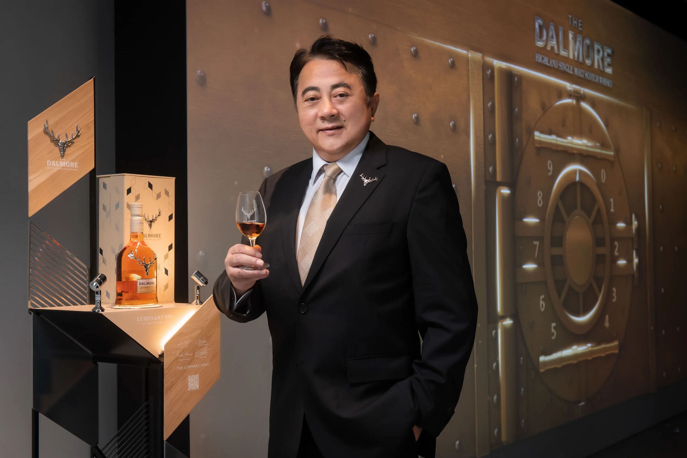

大摩築光大師系列 No.1 2022限定版
首創「金繼」橡木桶，雙擘攜手築構傳奇巔峰
被譽為「老酒銀行」的世界最尊貴威士忌大摩，與蘇格蘭首座設計博物館V&A Dundee展開藝術合作計畫，首席傳奇釀酒師理查・派特森（Richard Paterson）攜手當代建築大師隈研吾在2022年打造「大摩築光大師系列」。「築光」之名來自由受封大英帝國勳章官佐勳章（OBE）的大摩首席釀酒師理查・派特森與卓越創作者的攜手合作，致敬那些以追求卓越而發出光芒，並激勵大眾釋放潛力的各界傑出人物。「大摩築光大師系列」預計三年推出三版，2022年首發版本「大摩築光大師系列 No.1」，包含兩個珍稀酒款，「大摩築光大師系列 No.1 珍稀48年單一麥芽威士忌」及「大摩築光大師系列 No.1 2022限定版單一麥芽蘇格蘭威士忌」。 「大摩築光大師系列 No.1 2022限定版單一麥芽蘇格蘭威士忌」 ，此15年的威士忌，首創以三種珍稀橡木桶，蘇格蘭橡木桶 (Tay Oak)、日本水楢桶和美國白橡木桶，訂製成「金繼」（Kintsugi）橡木桶，並陳釀出具有多重獨特風味且完美平衡的單一麥芽威士忌，全球限量15,000瓶、每瓶售價NTD$10,000，此為入手「大摩築光大師系列」的難得機會，令全球威士忌藏家與行家驚喜雀躍。11月2日及3日舉辦的「大摩築光大師系列上市發表會」以「光．影」築構大師藝術之美，並由「光之舞者」帶來在黑暗中優雅如鑽的絢光演出，象徵理查・派特森與隈研吾兩位大師協作「築光系列」為跨界藝術影響力的燈塔之作。

金繼橡木桶，昇華古老工藝為藝術創造
金繼（Kintsugi）（金継ぎ，「以金子去承繼」之意），為日本古老傳統的修復技術，以漆和金粉黏合破碎器皿使其優雅重生，更被視為一種藝術哲學。理查・派特森與隈研吾以金繼為靈感應用在「大摩築光大師系列 No.1」橡木桶工藝，創新的「大摩築光大師系列 No.1 2022限定版單一麥芽蘇格蘭威士忌」彰顯了兩位大師對自然木材和風味的熱情，這款15年的威士忌最初在美國白橡木中陳年，而後轉桶熟成於手工挑選的義大利 Amarone 風乾葡萄酒桶、及首創的金繼（Kintsugi）橡木桶，其由蘇格蘭橡木桶 (Tay Oak)、日本水楢桶和美國白橡木桶訂製，這款非凡的威士忌而成，平衡了當地傳統威士忌與實驗創新陳年技術，從包裝到酒款皆帶來豐富多元的藝術表現，是款鼓舞人心的創新單一麥芽威士忌。
大師攜手大師，四手聯彈築光協奏
大摩首席傳奇釀酒師理查・派特森在威士忌產業度過了半世紀歲月，以對威士忌的貢獻深遠獲得OBE 榮譽 ，以天賦異稟的嗅味覺和對橡木桶工藝的熱情，聞名世界。大摩威士忌在理查的創作下，在拍賣中維持不凡記錄，例如「大摩鎏金時代 - 六號典藏系列」創下了奢華威士忌的全新紀錄，這是唯一一套橫跨六個十年的時光珍釀，並在 2021 年 10 月於香港蘇富比秋季拍賣會創下 110 萬美元（約 3,300 萬新台幣）的落槌新記錄。
日本當代建築師隈研吾是當今最具影響力的建築師之一，也是唯一一位入選 2021 年 TIME 100 的建築師，他設計V&A Dundee建築空間並為 2020 年東京奧運國家體育場首席建築師，作品遍及全球，設計皆為與周圍環境和諧共存，從天然材料、尤其是木材中汲取靈感，創作出經得起時間考驗的建築大師傑作。
大摩與V&A 理查・派特森與隈研吾合作「築光大師系列 No.1」，講述富有遠見的工藝家「磨練」手藝的故事，慶祝這段實現藝術家潛力的旅程，鑑賞家和奢華品酒人士將透過「大摩築光大師系列 No.1 2022限定版單一麥芽蘇格蘭威士忌」感受大摩精湛橡木桶工藝與世界建築大師設計的結合，品味一件完整的藝術品。
更多大師對談請上大摩單一麥芽威士忌官方YOUTUBE頻道觀賞「大摩築光大師系列 l 藝珍之作」
第一篇章 靈感之源
第二篇章 藝念匠心
第三篇章 漸入藝界
「大摩築光大師系列 No.1 2022限定版單一麥芽蘇格蘭威士忌」
- 橡木桶履歷 : 美國白橡木桶 、義大利Amarone風乾葡萄酒桶、蘇格蘭橡木桶、日本水楢桶
- 酒精濃度：46.8% 非冷凝過濾｜自然酒色
- 年份：15年
- 香氣：溫暖宜人的濃郁水果、奶油布丁、蜂蜜烤杏仁和柑橘油。
- 口感：層次豐富且濃郁的柑橘、巧克力、櫻桃、無花果、奶油蛋捲的薑餅。
- 餘韻：果乾和蜂蜜的風味，與木質香調、可可一同平衡交織。

「大摩築光大師系列 No.1 珍稀48年單一麥芽威士忌」
- 橡木桶履歷 : Oloroso雪莉桶、Apostoles雪莉桶、年份波特桶、美國白橡木桶、蘇格蘭橡木桶(Tay Oak)、日本水楢桶
- 酒精濃度：40.8% 非冷凝過濾｜自然酒色
- 香氣：多種異國情調的風味和諧融合，黑櫻桃、烤咖啡豆、波特酒、金銀花和甜瓜。
- 口感：充滿活力的黑森林水果、楓糖漿、壓碎的Pontefract甘草甜餅和厚實巧克力蛋糕。
- 餘韻：英國德梅拉拉糖、塞維利亞橘子果醬和杏子。